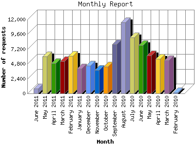

The Monthly Report identifies activity for each month in the report
time frame. Remember that each page hit can result in several server requests
as the images for each page are loaded.
Note: Depending on the
report time frame, the first and last months may not represent a complete
month's worth of data, resulting in lower hits.

| Month | Number of requests | Number of page requests | |
|---|---|---|---|
| 1. | February 2010 | 145 | 53 |
| 2. | March 2010 | 5,399 | 2,641 |
| 3. | April 2010 | 5,613 | 2,589 |
| 4. | May 2010 | 6,197 | 3,119 |
| 5. | June 2010 | 7,843 | 3,062 |
| 6. | July 2010 | 9,059 | 4,441 |
| 7. | August 2010 | 11,522 | 3,802 |
| 8. | September 2010 | 8,003 | 4,825 |
| 9. | October 2010 | 4,318 | 2,429 |
| 10. | November 2010 | 3,751 | 2,319 |
| 11. | December 2010 | 4,521 | 2,912 |
| 12. | January 2011 | 4,061 | 2,667 |
| 13. | February 2011 | 6,058 | 4,264 |
| 14. | March 2011 | 5,208 | 2,572 |
| 15. | April 2011 | 4,878 | 2,690 |
| 16. | May 2011 | 6,011 | 2,463 |
| 17. | June 2011 | 805 | 279 |
Most active month September 2010 : 4,825 pages sent. 11,522 requests handled.
Monthly average: 2,772 pages sent. 5,493 requests handled.
This report was generated on June 3, 2011 15:57.
Report time frame February 27, 2010 19:36 to June 2, 2011 23:44.
| Web statistics report produced by: analog 6.0 / Report Magic 2.21 |